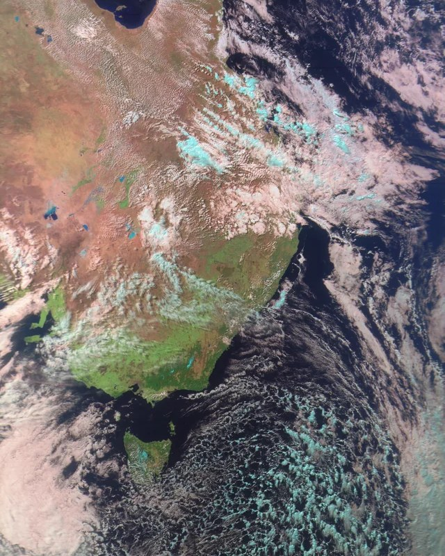
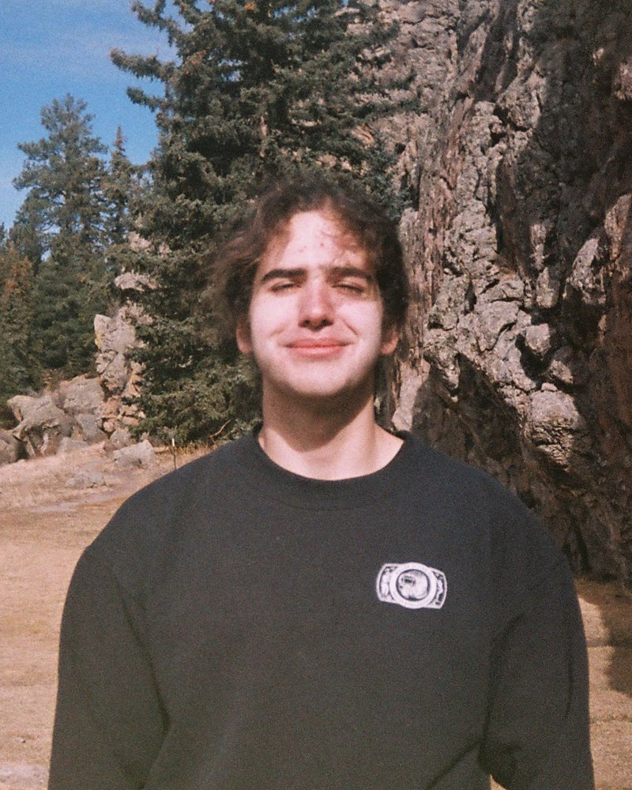
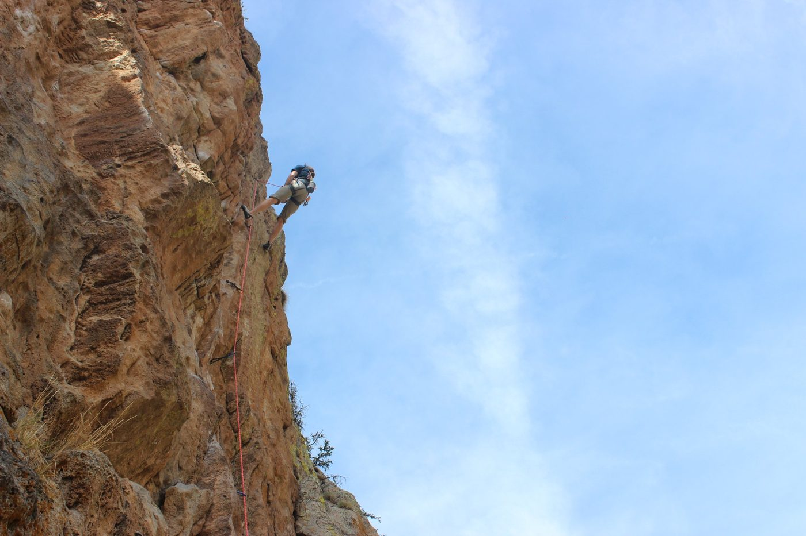
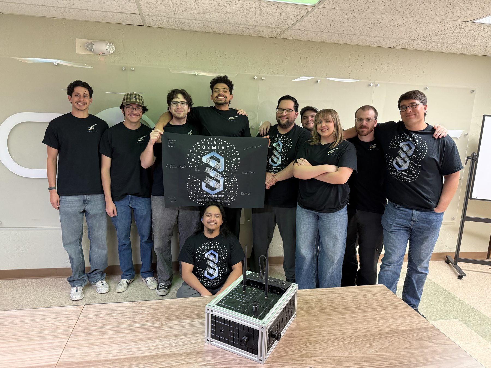
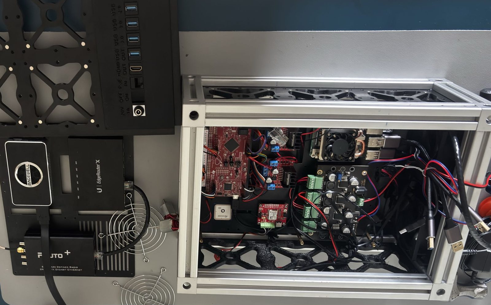

Benjamin Webster Technical Writing Portfolio
English 2210: Professional and Technical Communication
University of New Mexico, Fall 2026
All nine documents are under Documents in the red menu bar at the top of every page, one page each.

(opens the full image)
About me
I am a senior at the University of New Mexico completing dual bachelor’s degrees in Computer Science and Computer Engineering, and I am continuing into UNM’s 4+1 shared-credit M.S. in Computer Engineering. Since March 2026, I have worked as a research assistant at COSMIAC, where I build software-defined radio testbeds, embedded communication systems, and satellite mission simulations for sponsored space projects. Before that, I worked in UNM’s Department of Electrical and Computer Engineering designing real-time FPGA control for three-phase power inverters. My work spans C/C++, Python, FPGA development, high-performance computing, and machine learning, and I am comfortable moving between hardware and software. I am a National Science Foundation scholarship recipient, and more than two years as a STEM tutor taught me to explain complex technical ideas clearly to many different audiences.
Where I study and work

At COSMIAC
COSMIAC is the University of New Mexico School of Engineering’s aerospace research center. I work there with a team of students and engineers on software-defined radio, embedded systems, and satellite simulation, including orbital dynamics models in Ansys STK.

